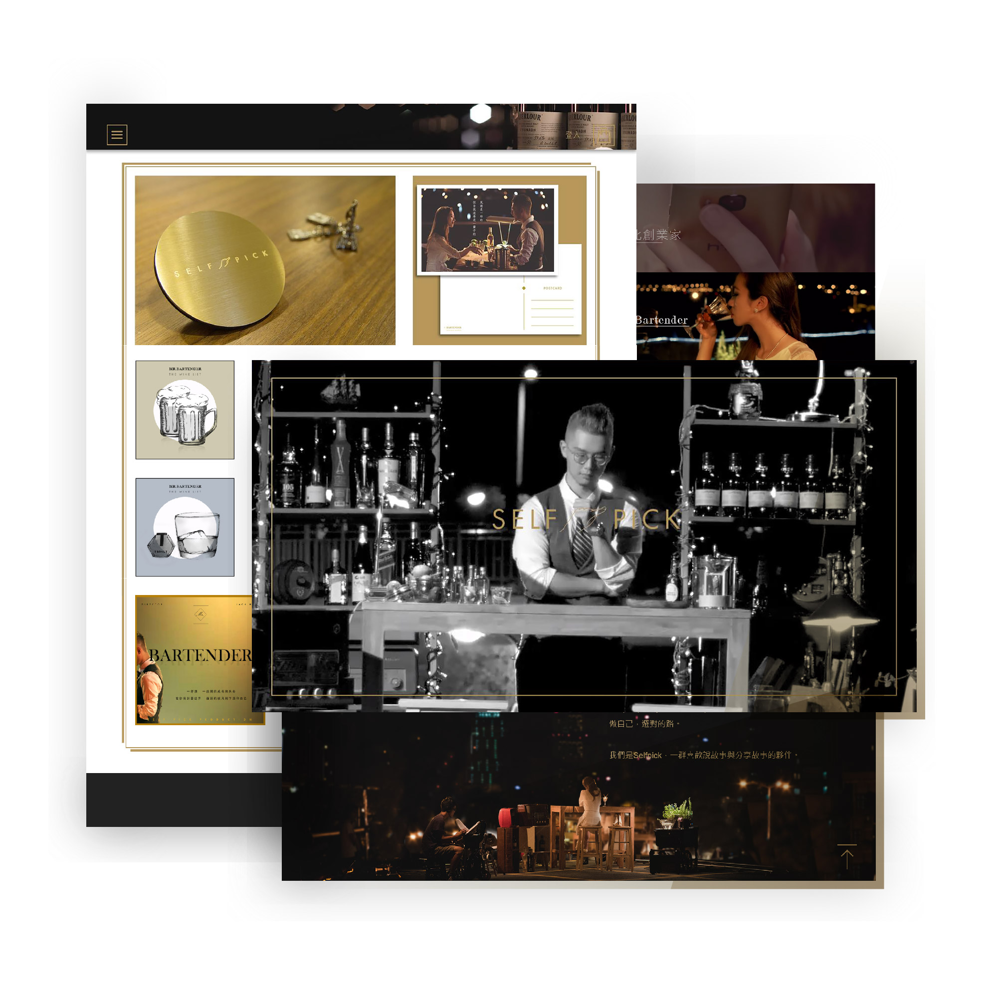
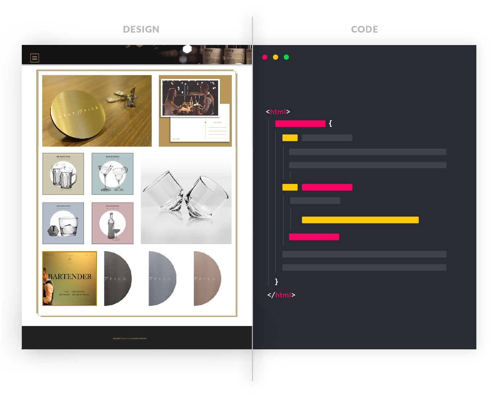
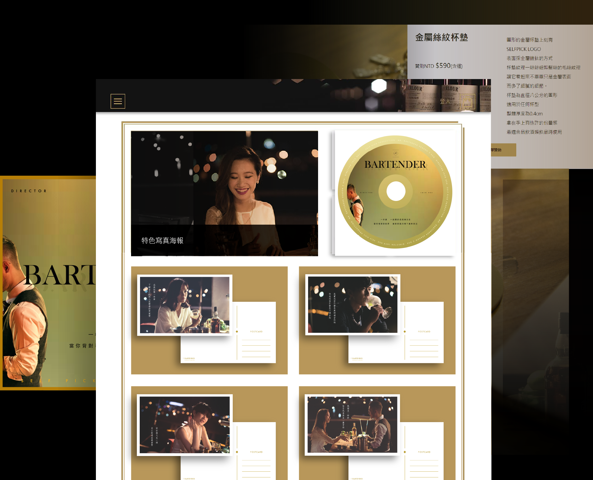
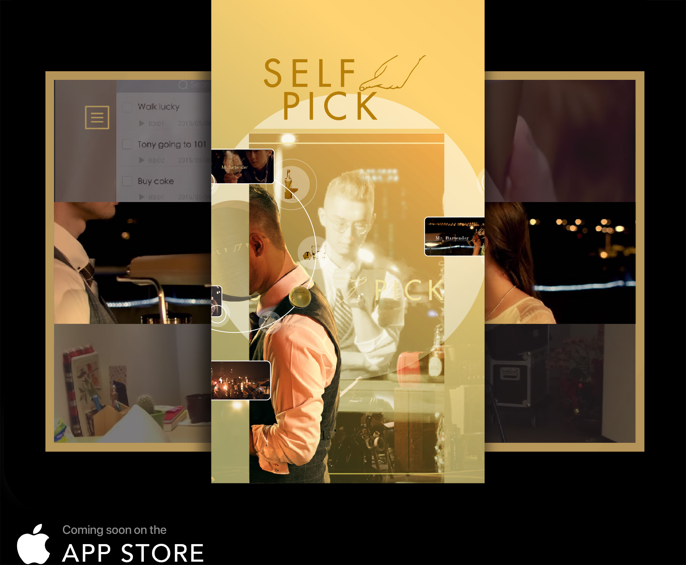
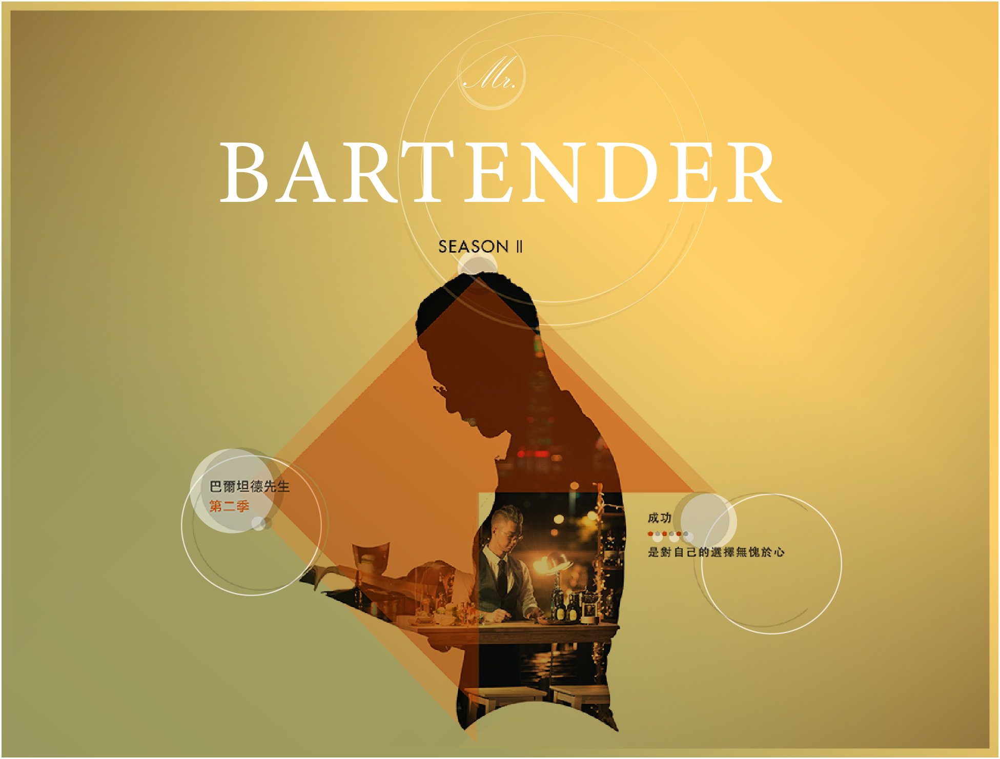

Personal image studio
Business web design
Business web design


2015-Present
My role is Involved in all web and app design stages from concept to final front end implementation.

One of my major project was to redesign and implement the front-end of the website for desktop and mobile. The whole process took about 6 months before the site was ready to go live.

In order to satisfy both personal computer users and mobile device users, my partners and I have developed a responsive web design. Planning the content of web pages displayed on different devices can reduce the use of bandwidth and improve the performance of SEO and web browsing.

Crowdfunding at FlyingV
SELFPICK is a storytelling company. We use Mr. Bartneder to tell the true feelings of young people in work, love and life.
Why do we crowdfund to shoot micro-films? We look forward to higher-quality online video and audio content, not just funny short videos or otaku idols. Because of this, we are more dedicated to producing high-quality video and audio content and we hope to promote it to all Asia. So everyone can see the strength of Taiwan in producing sophisticated online videos.

next project